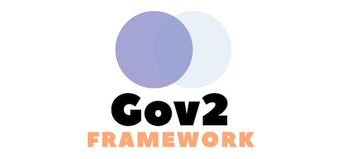

Software-Software yang Dirintis Cyber Gov Labs

Krisna
Kolaborasi Perencanaan dan Informasi Kinerja Anggaran (Krisna) adalah kelompok besar software-software yang digunakan pemerintah pusat & pemerintah daerah untuk menyusun RAPBN tahun depan & mengevaluasi performa anggaran tahun ini.
Pelajari lebih lanjut di wiki

Sidalih
Sistem Informasi Data Pemilih (Sidalih) adalah software yang digunakan KPU untuk mengawal tahapan-tahapan dalam penentuan Daftar Pemilih Tetap (DPT) sebelum pemilu diadakan.
Pelajari lebih lanjut di wiki

Gov2
Software pemerintah punya pola yang berulang. Oleh karena itu, Cyber Gov Labs membuat & merilis open source coding framework yang sudah memiliki pola-pola tersebut. Dengan Gov2, pembuatan software pemerintahan jadi lebih mudah dan cepat.
Pelajari lebih lanjut di wiki